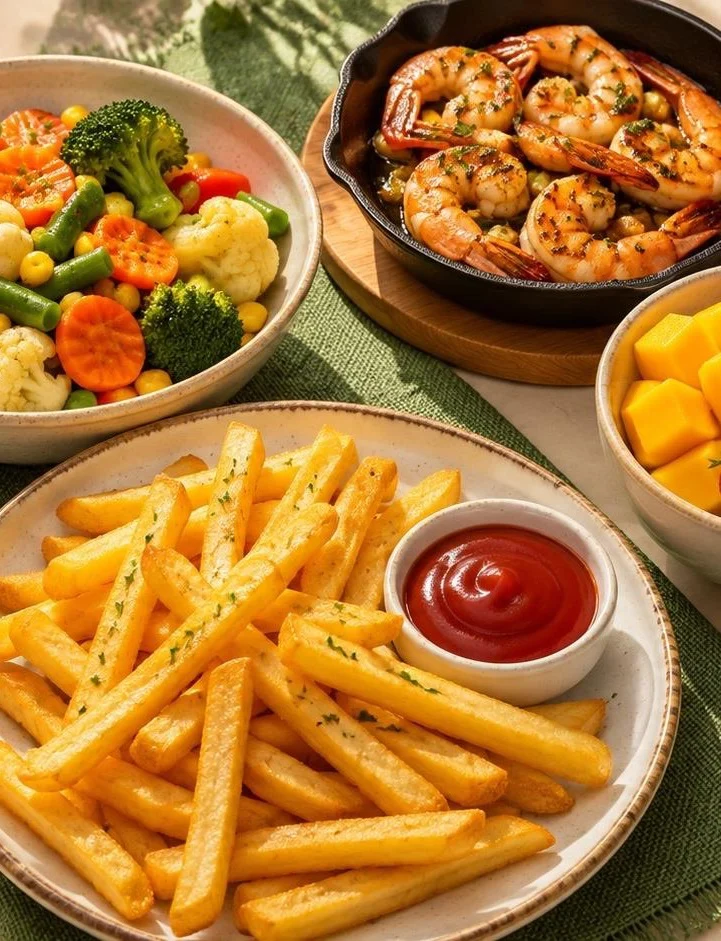
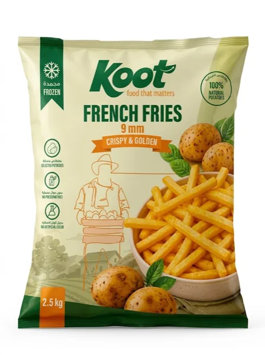

Food that matters.
A Dubai food trading company. Frozen French fries, vegetables, fruits and pulps, seafood, sauces and pickles under the Koot name, for retail, foodservice and import.


French friesThe whole range, at a glance.
Find your Koot in three questions.
Tell us your business, what you need and the pack size. We shortlist the products that fit.
Start the finder →From field to plate.
- 01The potatoIt starts with potatoes chosen for frying: long, firm and dense.
- 02The packCut, frozen fast and packed for professional kitchens and retail freezers.
- 03The plateGolden outside, fluffy inside, and ready in minutes.

How we work with you.
Foodservice
For restaurants, hotels and caterers: consistent products in kitchen-ready packs, with clear specifications.
→ 02Retail and quick-commerce
Shelf-ready Koot packs, with the product information your buying team needs.
→ 03Importers and wholesale buyers
The Koot range for international markets, with the details and documents you need to import with confidence.
→One table, all Koot.

Trust is built on details.
Everything a buyer needs to decide is on the product page, with no registration.
Origin, stated
Every product lists its country of origin, item code, pack size and carton details.
Spec sheets, on hand
The French fries specification sheet downloads from the product page. Sheets for other products are available on request.
Storage, specified
Storage type, shelf life and carton weight are given for each item.